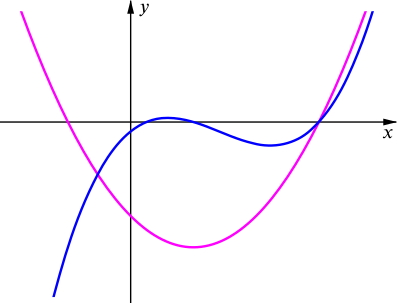

Can you find a cubic equation ax3+bx+c=0 where (at least) one of the roots of the corresponding quadratic ax2+bx+c=0 is also a root of the cubic?
Before diving into this question we might begin by taking a step back to think about what it is asking us to find.
Can we represent the problem graphically?
Do we expect there to be a unique solution?
We are essentially looking for a quadratic and cubic curve that both pass through a given point (or pair of points) on the x-axis. It feels as though there may be lots of pairs of curves like this, and indeed we may have already found an example of a cubic and quadratic curve that each pass through (0,3) in the Warm-up problem.

But are both equations in the form ax3+bx+c=0 and ax2+bx+c=0 as required?
This constraint narrows down the problem. We might need to consider algebraic representations of the problem to help us make progress.
Let’s label the quadratic and cubic equations f(x) and g(x) so that
f(x)g(x)=ax2+bx+c=ax3+bx+c.
Now if f(k)=0 and g(k)=0, so that k is a root of both equations, we can write
ak2+bk+c=0andak3+bk+c=0.
We can now equate the left hand sides to get ak2+bk+c=ak3+bk+c. Subtracting bk+c gives ak2=ak3, and this is only true for k=1 or k=0. (It is also true if a=0, but then we don’t have a cubic equation, so we can ignore this possibility.)
Did you remember to consider the possibility that k=0?
If k=0, there is a common root at x=0, so c=0 and we can rewrite the equations as
f(x)g(x)=ax2+bx=x(ax+b)=ax3+bx=x(ax2+b).
How did we know that c=0 in this case?
You might like to use the GeoGebra applet below to convince yourself of our findings so far. You can adjust the sliders to see how the functions change for different values of a and b (but with our common root staying fixed at x=0).
Can you adjust the sliders to find a case where the functions share two roots?
Is this case unique or can you find another?
Where do you expect the second shared root to be?
We began this line of thinking by considering the case where k=0. How might we now consider the other possibility that k=1, so there is a common root at x=1?
By the factor theorem we can say that if f(k)=0 and g(k)=0, so that k is a root of both equations, we also have (x−k) as a factor of both f(x) and g(x). So in this case, x−1 is a factor of both f(x) and g(x).
What’s the same and what’s different about this GeoGebra applet, when compared to the first one?
Can you suggest a pair of functions for which x=1 is a root but x=0 is not?
Looking at the graph, it is also interesting to think about the behaviour of the graphs at the points where they meet: how do the behaviours at x=0 and x=1 compare?
On reflection…
When we reflected on our approach, we realised that there is an easier way to think about the problem.
Where do the cubic and quadratic graphs intersect?
The original question asks when are ax3+bx+c=0 and ax2+bx+c=0 both true. This means in particular that we require the cubic y=ax3+bx+c and quadratic y=ax2+bx+c to intersect, so we need ax3+bx+c=ax2+bx+c.
If we now subtract bx+c from this, we get ax3=ax2. Therefore the cubic and quadratic always intersect at x=0 and x=1!
We can now finish the problem off by determining whether ax2+bx+c=0 at either of these points. There will be a (shared) root at x=0 if and only if c=0, and a (shared) root at x=1 if and only if a+b+c=0. And we are done!
An alternative algebraic approach
One way to approach this problem using algebra is to write the cubic and quadratic in terms of their roots. Let us assume that α is a common root, let the other roots of the cubic be β and γ, and the other root of the quadratic be δ. Then we can write the cubic as a(x−α)(x−β)(x−γ)=0 and the quadratic as a(x−α)(x−δ)=0.
which simplifies to α(β+γ)=−α, so α=0 (bringing us back to Case 1) or β+γ=−1.
In the latter case, equation (1) then gives α=1, so the cubic and quadratic share the root α=1, and they become
ax3−a(δ+1)x+aδ=0andax2−a(δ+1)x+aδ=0.
or
ax3+bx+c=0andax2+bx+c=0
where a+b+c=0.
Is there any choice here which would mean that both roots of the quadratic are roots of the cubic?
Is there another way of seeing why a+b+c=0 would give a common root of x=1? And is it always the case that if x=1 is a root of ax3+bx+c=0, then it is also a root of ax2+bx+c=0?